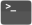

In Lab 1 we explored how ROS works and how to bring a robot to life. Let's quickly recap the key points:
ROS Nodes
Are executable programs (Python, C++ scripts) that perform specific robot tasks and operations.
Typically, there'll be many ROS Nodes running on a robot simultaneously in order to make it work.
We can create our own Nodes on top of what's already running, to add extra functionality.
You may recall that we created our own ROS Node in Python, to make our TurtleBot3 Waffle follow a square motion path.
Topics and Messages
All the ROS Nodes running on a network can communicate and pass data between one another using a Publisher/Subscriber-based Communication Principle.
ROS Topics are key to this - they are essentially the communication channels (or the plumbing) on which all data is passed around between the nodes.
Different topics communicate different types of information.
Any Node can publish (write) and/or subscribe to (read) any ROS Topic in order to pass information around or make things happen.
One of the key ROS Topics that we worked with last time was /cmd_vel, which is a topic that communicates velocity commands to make a robot move.
We published Twist messages to this (both via the command line, and in Python) to make our TurtleBot3 Waffle move.
Open-Loop Control
We used a time-based method to control the motion of our robot in order to get it to generate a square motion path. This type of control is open-loop: we hoped that the robot had moved (or turned) by the amount that was required, but had no feedback to tell us whether this had actually been achieved.
In this lab we'll look at how this can be improved, making use of some of our robot's on-board sensors to tell us where the robot is or what it can see in its environment, in order to complete a task more reliably and be able to better adapt to changes and uncertainty in the environment.
In this lab, we'll build some ROS Nodes (in Python) that incorporate data from some of our robot's sensors. This sensor data is published to specific topics on the ROS Network, and we can build ROS Nodes to subscribe to these. We'll see how the data from these sensors can be used as feedback to inform decision-making, thus allowing us to implement some different forms of closed-loop control, making our robot more autonomous.
Interpret the data from a ROS Robot's Odometry System and understand what this tells you about a Robot's position and orientation within its environment.
Use feedback from a robot's odometry system to control its position in an environment.
Use data from a Robot's LiDAR sensor to make a robot follow a wall.
Generate a map of an environment, using SLAM.
Make a robot navigate an environment autonomously, using ROS navigation tools.
To start with, you'll need to download a ROS package to the Robot Laptop that you are working on today. This package contains all the resources that you'll need for the lab exercises.
Open up a terminal instance on the laptop, either by using the Ctrl+Alt+T keyboard shortcut, or by clicking the Terminal App icon in the favourites bar on the left-hand side of the desktop:

In the terminal, run the following commands in order:
Tip
To paste the following commands into the terminal use Ctrl+Shift+V
First, let's look at our robot's odometry system, and what this is useful for.
Odometry is the use of data from motion sensors to estimate change in position over time. It is used in robotics by some legged or wheeled robots to estimate their position relative to a starting location. 1
Our robot can therefore keep track of its position (and orientation) as it moves around. It does this using data from two sources:
Wheel encoders: Our robot has two wheels, each is equipped with an encoder that measures the number of rotations that the wheel makes.
An Inertial Measurement Unit (IMU): Using accelerometers, gyroscopes and compasses, the IMU can monitor the linear and angular velocity of the robot, and which direction it is heading, at all times.
This data is published to a ROS Topic called /odom.
In the previous lab we used some ROS commands to identify and interrogate active topics on the ROS network, let's give that another go now, but on the /odom topic this time.
Open up a new terminal instance on the laptop (by pressing Ctrl+Alt+T, or clicking the Terminal App desktop icon, as you did before). Well call this one TERMINAL 1.
As you may recall from last time, we can use the rostopic command to list all the topics that are currently active on the network. Enter the following in TERMINAL 1:
TERMINAL 1:
rostopiclist
A large list of items should appear on the screen. Can you spot the /odom topic?
Let's find out more about this using the rostopic info command.
One of the key things that this does tell us is that the /odom topic transmits data using a nav_msgs/Odometry message. All topics use standard message types to pass information around the ROS network. This is so that any node on the ROS network knows how to deal with the data, if it needs to. nav_msgs/Odometry is one of these standard message types.
We can use the rosmsg command to find out more about this:
TERMINAL 1:
rosmsginfonav_msgs/Odometry
You'll see a lot of information there, but try to find the line that reads geometry_msgs/Pose pose:
geometry_msgs/Pose pose
geometry_msgs/Point position
float64 x
float64 y
float64 z
geometry_msgs/Quaternion orientation
float64 x
float64 y
float64 z
float64 w
Here's where we'll find information about the robot's position and orientation (aka "Pose") in the environment. Let's have a look at this data in real time...
We can look at the live data being streamed across the /odom topic, using the rostopic echo command. We know that this topic uses nav_msgs/Odometry type messages, and we know which part of these messages we are interested in (geometry_msgs/Pose pose)
TERMINAL 1:
rostopicecho/odom/pose/pose
Now, let's drive the robot around a bit and see how this data changes as we do so. Open up a new terminal instance by pressing Ctrl+Alt+T, or clicking the Terminal App desktop icon, as you did before. We'll call this one TERMINAL 2.
Remember that node that we used last time that allowed us to control the motion of the robot using different buttons on the keyboard? Let's launch that again now:
Follow the instructions provided in the terminal to drive the robot around:
As you're doing this, look at how the position and orientation data is changing in TERMINAL 1, in real-time!
Post-lab Quiz
Which position and orientation values change (by a significant amount) when:
The robot turns on the spot (i.e. only an angular velocity is applied)?
The robot moves forwards (i.e. only a linear velocity is applied)?
The robot moves in a circle (i.e. both a linear and angular velocity are applied simultaneously)?
Make a note of the answers to these questions, as they may feature in the post-lab quiz!
When you've seen enough enter Ctrl+C in TERMINAL 2 to stop the turtlebot3_teleop_keyboard node. Then, enter Ctrl+C in TERMINAL 1 as well, which will stop the live stream of Odometery messages from being displayed.
Pose is a combination of a robot's position and orientation in its environment.
Position tells us the location (in meters) of the robot in its environment. Wherever the robot was when it was turned on is the reference point, and so the distance values that we observed in the exercise above were all quoted relative to this initial position.
You should have noticed that (as the robot moved around) the x and y terms changed, but the z term should have remained at zero. This is because the X-Y plane is the floor, and any change in z position would mean that the robot was floating or flying above the floor!
Orientation tells us where the robot is pointing in its environment, expressed in units of Quaternions; a four-term orientation system. Don't worry too much about this though, we'll convert this to Euler angles (in degrees/radians) for you, to make them a bit easier to work with for the following exercise.
Now that we know about the odometry system and what it tells us, let's see how this could be used as a feedback signal to inform robot navigation. You may recall that last time you created a ROS Node to make your robot to follow a square motion path on the floor. This was time-based though: given the speed of motion (tuning or moving forwards) it was possible to determine the time it would take for the robot to move by a required distance. Having determined this, we then added timers to our node, to control the switch between moving forwards and turning on the spot, in order to generate the square motion path.
In theory though, we can do all this with odometry instead, so let's have a go at that now...
Open up the amr31001 ROS package that you downloaded earlier into VS Code using the following command in TERMINAL 1:
TERMINAL 1:
code~/catkin_ws/src/amr31001
In VS Code, navigate to the src directory in the File Explorer on the left-hand side, and click on the ex2.py file to display it in the editor.
Have a look through the code and see if you can work out what's going on. There are a few things to be aware of:
Motion control is handled by an external Python module called waffle, which is imported on line 4:
importwaffle
and instantiated on line 16:
motion=waffle.Motion()
In the main part of the code, this can then be used to control the velocity of the robot, using the following methods:
motion.move_at_velocity(linear = x, angular = y) to make the robot move at a linear velocity of x (m/s) and/or an angular velocity of y (rad/s).
motion.stop() to make the robot stop moving.
Subscribing to the /odom topic and the processing of the nav_msgs/Odometry data is also handled by the waffle module, so you don't have to worry about it! This functionality is instantiated on line 17:
pose=waffle.Pose()
So all that you have to do in order to access the robot's odometry data in the main part of the code is call the appropriate attribute:
pose.posx to obtain the robot's current position (in meters) in the X axis.
pose.posy to obtain the robot's current position (in meters) in the Y axis.
pose.yaw to obtain the robot's current orientation (in degrees) about the Z axis.
Run the code in TERMINAL 1 and observe what happens:
TERMINAL 1:
rosrunamr31001ex2.py
The robot should start turning on the spot, and you should see some interesting information being printed to the terminal. After it has turned by 45°, the robot should stop momentarily and then carry on turning again.
Stop the Node by entering Ctrl+C in TERMINAL 1.
What you need to do:
In the while() loop there is an if statement with a condition that handles the turning process:
elifmovement=="turn":
Within this, look at how the robot's yaw angle is being monitored and updated as it turns. Then, look at how the turn angle is being controlled. See if you can adapt this to make the robot turn in 90° steps instead.
Ultimately, after the robot has turned by 90° it needs to then move forwards by 0.5m, in order to achieve a 0.5x0.5m square motion path.
Moving forwards is handled by an additional condition within the if statement:
elifmovement=="move_fwd":
See if you can adapt the code within this block to make the robot move forwards by the required amount (0.5 meters) in between each turn. Hint
Consider how the turn angle is monitored and updated whist turning (current_yaw), and take a similar approach with the linear displacement (current_distance). Bear in mind that you'll need to consider the euclidean distance, which you'll need to calculate based on the robot's position in both the x and y axis.
Make sure that you've saved any changes to the code (in VS Code) before trying to test it out on the robot!
Do this by using the Ctrl+S keyboard shortcut, or going to File > Save from the menu at the top of the screen.
Once you've saved it, you can re-run the code at any time by using the same rosrun command as before:
TERMINAL 1:
rosrunamr31001ex2.py
... and you can stop it at any time by entering Ctrl+C in the terminal.
Python Tips
You'll need to do a bit of maths here (see the "Hint" above). Here's how to implement a couple of mathematical functions in Python:
To the power of...: Use ** to raise a number to the power of another number (i.e. 23):
>>>2**38
Square Root: To calculate the square root of a number use the sqrt() function:
As you'll know, the black spinning device on the top of your robot is a LiDAR Sensor. As discussed previously, this sensor uses laser pulses to measure the distance to nearby objects. The sensor spins continuously so that it can fire these laser pulses through a full 360° arc, and generate a full 2-dimensional map of the robot's surroundings.
This data is published to a ROS Topic called /scan. Use the same methods that you used in Exercise 1 to find out what message type is used by this ROS Topic.
Post-lab Quiz
Make a note of this, there'll be a post-lab quiz question on it!
Launch RViz, so that we can see the data coming from this sensor in real-time:
TERMINAL 1:
roslaunchtuos_tb3_toolsrviz.launch
The red dots illustrate the LiDAR data. Hold your hand out to the robot and see if you can see it being detected by the sensor... a cluster of red dots should form on the screen to indicate where your hand is located in relation to the robot. Move your hand around and watch the cluster of dots move accordingly. Move your hand closer and farther away from the robot and observe how the red dots also move towards or away from the robot on the screen.
This data is really useful and (as we observed during the previous lab session) it allows us to build up 2-dimensional maps of an environment with considerable accuracy. This is, of course, a very valuable skill for a robot to have if we want it to be able to navigate autonomously, and we'll explore this further later on. For now though, we'll look at how we can use the LiDAR data ourselves to build Nodes that make the robot detect and follow walls!
Once you're done, close down RViz by hitting Ctrl+C in TERMINAL 1.
In VS Code, click on the ex3.py file in the File Explorer to display it in the editor.
Have a look through the code and see if you can work out what's going on. Here's a few points to start with:
Velocity control is handled in the same way as in the previous exercise:
motion.move_at_velocity(linear = x, angular = y) to make the robot move at a linear velocity of x (m/s) and/or an angular velocity of y (rad/s).
motion.stop() to make the robot stop moving.
The data from the LiDAR sensor has been preprocessed and encapsulated in an additional class from the waffle module. This functionality is instantiated on line 13:
lidar=waffle.Lidar()
This class splits up data from the LiDAR sensor into a number of different segments to focus on a number of distinct zones around the robot's body (to make the data a bit easier to deal with). For each of the segments (as shown in the figure below) a single distance value can be obtained, which represents the average distance to any object(s) within that particular angular zone:
In the code, we can obtain the distance measurement (in meters) from each of the above zones as follows:
lidar.distance.front to obtain the average distance to any object(s) in front of the robot (within the frontal zone).
lidar.distance.l1 to obtain the average distance to any object(s) located within LiDAR zone L1.
lidar.distance.r1 to obtain the average distance to any object(s) located within LiDAR zone R1.
and so on...
The code template has been developed to detect a wall on the robot's left-hand side.
We use distance measurements from LiDAR zones L3 and L4 to determine the alignment of the robot to a left-hand wall.
This is determined by calculating the difference between the distance measurements reported from these two zones:
wall_rate=lidar.distance.l3-lidar.distance.l4
1. If this value is close to zero, then the robot and the wall are well aligned. If not, then the robot is at an angle to the wall, and it needs to adjust its angular velocity in order to correct for this:
Run the node, as it is, from TERMINAL 1:
TERMINAL 1:
rosrunamr31001ex3.py
When you do this, you'll notice that the robot doesn't move at all (yet!), but the following data appears in the terminal:
The distance measurements from each of the LiDAR zones.
The current value of the wall_rate parameter, i.e. how well aligned the robot currently is to a wall on its left-hand side.
The decision that has been made by the if statement on the appropriate action that should be taken, given the current value of wall_rate.
What you need to do:
First, place the robot on the floor with a wall on its left-hand side
Manually vary the alignment of the robot and the wall and observe how the information that is being printed to the terminal changes as you do so.
Question
The node will tell you if it thinks the robot needs to turn right or left in order to improve its current alignment with the wall. Is it making the correct decision?
Currently, all velocity parameters inside the while loop are set to zero.
You'll need to set a constant linear velocity, so that the robot is always moving forwards. Set an appropriate value for this now, by editing the line that currently reads:
lin_vel=0.0
The angular velocity of the robot will need to be adjusted conditionally, in order to ensure that the value of wall_rate is kept as low as possible at all times. Adjust the value of ang_vel in each of the if statement blocks so that this is achieved under each of the three possible scenarios.
Hopefully, by following the steps above, you will get to the point where you can make the robot follow a wall reasonably well, as long as the wall remains reasonably straight! Consider what would happen however if the robot were faced with either of the following situations:
You may have already observed this during your testing... how could you adapt the code so that such situations can be achieved?
Hints
You may need to consider the distance measurements from some other LiDAR zones!
The ex3.py template that was provided to you uses an if statement with three different cases:
if...:elif...:else:
You may need to add in some further cases to this to accommodate the additional situations discussed above, e.g.:
if...:elif...:elif...:elif...:else:
Finally, think about how you could adapt this algorithm to make the robot follow a wall on its right-hand side instead.
We've played around with the data from both the LiDAR sensor and the robot's Odometry System now, so hopefully you now understand what these two systems can tell us about our robot and its environment, and how this information is very valuable for robotic applications.
To illustrate this further, we'll now have a look at two extremely useful tools that are build into ROS, and that use the data from these two sensors alone to achieve powerful results!
Simultaneous Localisation and Mapping (SLAM)
As you now know, the LiDAR sensor gives us a full 360° view of our robot's environment. As the robot moves around it starts to observe different features in the environment, or perhaps the same features that it has already seen, but at a different perspective. Using the LiDAR data in combination with our robots Pose and Velocity (as provided by the Odometry System), we can actually build up a comprehensive 2-dimensional map of an environment and keep track of where our robot is actually located within that map, at the same time. This is a process called SLAM, and you may remember that we had a go at this in the previous lab session.
Navigation
Having built a complete map (using SLAM) our robot then knows exactly what its environment looks like, and it can then use the map to work out how to get from one place to another on its own!
In the next exercise, we'll have a go at this: first we need to build a map, then we can use that map to implement autonomous navigation!
Make sure none of your code from the previous exercise is still running now, TERMINAL 1 should be idle, ready to accept some new instructions!
Place your robot in the enclosure that we have created in the lab.
Then, in TERMINAL 1, run the following command:
TERMINAL 1:
roslaunchamr31001ex4_slam.launch
An RViz screen will open up showing the robot from a top-down view, with the LiDAR data represented by green dots.
SLAM is already working, and you should notice black lines forming underneath the green LiDAR dots to indicate the regions that SLAM has already determined as static and which therefore represent boundaries in the environment.
In TERMINAL 2 launch the turtlebot3_teleop_keyboard node again, to drive the robot around:
Drive the robot around until SLAM has built up a complete map of the entire arena.
Once you're happy with this, stop the turtlebot3_teleop_keyboard node by hitting Ctrl+C in TERMINAL 2. You can also stop SLAM now too, so head back to TERMINAL 1 and enter Ctrl+C to stop this too.
While you were doing the above, a map file was being constantly updated and saved to the laptop's filesystem. Have a quick look at this now to make sure that the map that you have built is indeed a good representation of the environment:
TERMINAL 1:
eog~/catkin_ws/src/amr31001/maps/my_map.pgm
If the map looks like the actual arena then you're good to move on, but if not then you may need to repeat the above steps again to give it another go.
Step 2: Navigating Autonomously
Using the map that you've just created you should now be able to make your robot navigate around the real environment!
Launch the navigation processes in TERMINAL 1 by entering the following command:
TERMINAL 1:
roslaunchamr31001ex4_nav.launch
RViz should then open up again, once again with a top-down view of the robot, but this time with the map that you generated earlier displayed underneath it (in black).
To begin with, the robot needs to know roughly where it is within this map, and we can tell it this by performing a manual "2D Pose Estimation".
Press the "2D Pose Estimate" button at the top of the RViz screen.
The map should be visible (in black) in the background underneath all the live LiDAR Data (displayed in green), but the two are probably not lined up properly. Move the cursor to the approximate point on the background map at which the robot is actually located.
Press and hold the left mouse button and a large green arrow will appear.
Whilst still holding down the left mouse button, rotate the green arrow to set the robot's orientation within the map.
Let go of the left mouse button to set the pose estimation. If done correctly, the real-time LiDAR data should nicely overlap the background map after doing this:
... if not, then have another go!
We then need to give the robot a chance to determine its pose more accurately. The navigation processes that are running in the background are currently generating what's called a "localisation particle cloud", which is displayed as lots of tiny green arrows surrounding the robot in RViz. The scatter of these green arrows indicates the level of certainty the robot currently has about its true pose (position and orientation) within the environment: a large scatter indicates a high level of uncertainty, and we need to improve this before we can make the robot navigate around autonomously.
We can improve this by simply driving the robot around the environment a bit, so that it gets the opportunity to see different walls and obstacles from different perspectives. In the background, the navigation algorithms will be comparing the real time LiDAR data with the background map that was generated earlier, and when the two things line up well, the robot becomes more certain about its pose in the environment.
Once again, launch the turtlebot_teleop_keyboard node in TERMINAL 2, and drive the robot around a bit:
As you're doing this, watch how the scatter in the localisation particle cloud reduces, and the small green arrows begin to converge underneath the robot.
Now, click the "2D Nav Goal" button:
Move the cursor to the location that you want the robot to move to on the map.
Click and hold the left mouse button and a large green arrow will appear again to indicate that the position goal has been set.
Whilst still holding the left mouse button, rotate the green arrow around to set the desired orientation goal.
Release the mouse button to set the goal...
The robot will then try its best to navigate to the destination autonomously!
Before you leave, please turn off your robot! Enter the following command in TERMINAL 1 to do so:
TERMINAL 1:
waffleNUMoff
... again, replacing NUM with the number of the robot that you have been working with today.
You'll need to enter y and then hit Enter to confirm this.
Please then shut down the laptop, which you can do by clicking the battery icon in the top right of the desktop and selecting the "Power Off / Log Out" option in the drop-down menu.